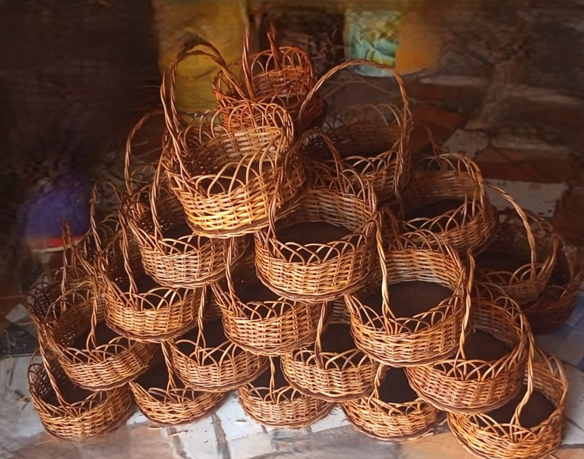
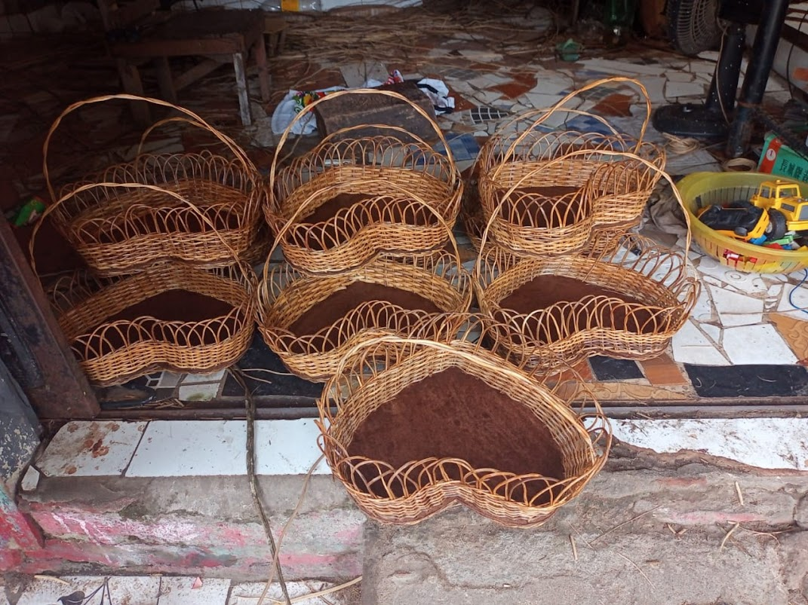
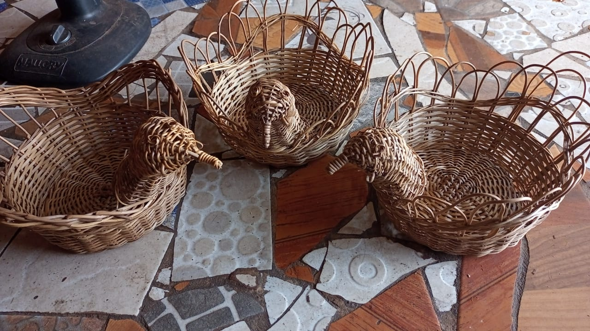

Cesta de piquinique
Cesta de piquinique com duas tampas, tecida com cipó titica e base de duratex
150,00

Cesta pequena
Cesta de alça, tecida com cipó titica e base de duratex
10,00
Cesta com formato de coração
Cesta com formato de coração, tecida com cipó e base de duratex
25,00
Cesta redonda
Cesta redonda, tecida com cipó e base de duratex
25,00

Cesta
Cesta tecida com cipó e base de duratex
25,00
Cesta de mercado
Cesta de mercado, tecida totalmente de cipó, ideal para fazer a feira da semana
50,00

Galinha
Cesta com forma de galinha, tecida totalmente de cipó, ideal enfeite de mesa, para colocar ovos ou frutas
50,00